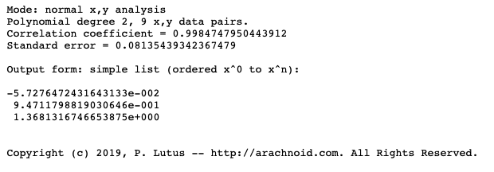

Lab Objective
The goal of this lab is to come up with a solution such that the robot starts in one point in the map, and it executes a path such that it hits all the intermediate waypoints.
Here are the waypoints:
(-4, -3)(-2, -1)(1, -1)(2, -3)(5, -3)(5, -2)(5, 3)(0, 3)(0, 0)
The unit here is not meters. It is the tile coordinate. Here is a screenshot of the path in the map.
 Trajectory of the path
Trajectory of the path
High Level Implementation
Here I will discuss the implementation I have come up with and my rationale for making these design choices.
- The robot is manually placed on
(-4, -3)with orientation0 degreesfacing east (right). - Laptop (Python) has a data structure storing all the waypoints. The robot's current state is initialized to
(-4, -3, 0) - Laptop fetches the next waypoint, and calculates 1. the degree the robot needs to turn from the current orientation such that it is directly facing the next way point, and 2. the straight line distance between the current state of the robot and the next waypoint.
- From the distance, laptop calculates how long the motor needs to stay on (for a fixed PWM value) by solving a quadratic equation (will be explained later).
- Laptop sends the command
MAKE_MOVE(angle, delay)to the robot. - Robot makes the move to the next waypoint.
- I press a key on the laptop to signal that the robot is done making the move. (or delay Python for some time)
- The robot's current state is updated to be the waypoint it has just hit with its current orientation. To calculate the current orientation, simply accumulates all the turns because the robot starts with orientation of 0 degrees.
- Repeat step
3until all waypoints are hit.
How do I calculate the motor delay when given a distance to travel?
I first did a series of (delay, distance) measurements. Upon receiving the command MAKE_MOVE(angle, delay), the robot will turn on the motor with a PWM value of 20 for delay milliseconds and then brake. The PWM value is on the lower end because my engineering intuition is telling me slower movements will lead to better controlability and repeatability (not sure if these two words exist, but you get the idea). I changed the delay parameter and record the corresponding distances the robot has traveled.
Here is the raw data in the form of (delay (seconds), distance (tiles)).
(0, 0)(0.5, 0.66)(0.7, 1.2)(0.9, 2)(1, 2.2)(1.2, 3.1)(1.4, 4)(1.5, 4.5)(1.8, 6)
I am doing a quadratic fit for these data. I acknowledge that this is not the best model. The robot's braking distance could be nonlinear with respect to delay. The robot's distance vs. delay should be roughly linear when it has reached steady state (constant speed). The quadratic fit should only work well before the robot has reached steady state. However, the fitted plot actually looks okay to me, and I am going to give it a shot. Here are the results of the quadratic fit.
 Polynomial fitting resultsThen we have a simple quadratic equation that yields the distance when given the delay. Inverting it is a trivial matter. Simply plug into the root equation we learned in Algebra II. Really don't feel like I'll need to provide the code here.
Why don't you use PID control of ToF readings instead?
Actually I tried. PID control of ToF readings work well when my robot is driving towards a wall, and that was how I tuned my PID parameters. However, it becomes tricky when the robot is in the map because of these reasons:
- The ToF sensor becomes very noisy when the robot is far away from the wall. The wall is short and the ToF sensor may not pick it up when it is far away. (or it picks up the signal reflecting from the ground). When the ToF sensor readings become noisy or inaccurate, PID control is doomed.
- PID control could be slower than my naive delay model because it typically involves oscillation around the set point. Unless my parameters are very good (which they are not), PID control in practice took more time than simply telling the robot to travel forward for a fixed time.
Why don't you perform localization techniques to estimate the position of the robot?
Actually I tried this as well. I implemented the localization technique from lab 12: doing a 360 turn in place and estimate the position of the robot for every waypoint. However, I gave up because of the following reasons:
- Each run takes a very long time, and there are many people in the lab waiting to test their robots as well.
- It is very, very, very slow, and this class is called fast robots.
- Doing the 360 degree turn will mess up the orientation of the robot because of gyroscope drifts. For example, the robot could start off at 0 degrees, and at the end of the 360 degree turn, it is at 15/20 degrees orientation. I could use the magnotometer for absolute orientation, but that would mean more work/more testing/more development time, and I was not sure if it is worth the risk of not meeting the deadline.
- An error in even one of the way points is detrimental to the path planning algorithm. I could integrate an odometry model to calculate the prior as well, but that means more work/more testing/more development time.
Implementation
Here comes the implementation! Again, I will divide into the Python portion and the Robot portion.
Python portion
The Python portion is easy, I am simply putting the written algorithm into code.
The screenshot below shows the first part of my Python implementation. Variables are initialized, and the trajectory is encoded into a Python list. I added one more waypoint between (5, -2) and (5, 3) to limit the maximum distance of one robot move such that the quadratic equation still holds true.
Then in the second part, the Python code computes the control angle and delay for the next way point, sends the command to the robot, wait for user confirmation of the robot's movement, and updates the current orientation and robot state to prepare for the next iteration.
Robot portion
Robot implementation is also simple. PID orientation control reuses my code from the lab 6 (PID control), lab 8 (stunts), lab 9 (mapping), lab 12 (localization), plus some modifications.
The robot first extracts the command and the command parameters from the BLE Python call. It then resets the IMU angle measurement (to avoid any timing issues) and invalidates the orientation difference tracking array. The orientation difference tracking array keeps track of the past N (default 20) IMU angle measurements. It is used to determine whether PID control has converged or not.
The robot then enters the PID orientation control loop. In this lab, precision of orientation is more important than speed. Therefore, the output limit of the PID controller is restricted to (-80, 80), and the PID control parameters are tuned down to be less aggressive. The same logic applies: the robot exits the loop when all the measurements in the orientation difference tracking array are less than a maximum error value (default 3 degrees).
At the end, the robot travels forward for delay milliseconds before applying an active brake.
Better Orientation Control
Precise orientation control is very tricky in this lab because the floor is too slippery, and my PID controller was tuned mostly at home. To have better control of orientation. Also that if the motors are driven too hard, the robot turns too fast and gyroscope becomes slightly less accurate. I did two things to accomondate the situation:
- Lowered the PID parameters (P and D) to make it less aggressive but more precise (less gyroscope drift).
- Restrict PID controller output to
[-80, 80]such that the robot turns slower.
Final Results
Here is a video of my best run. I would argue that the result is pretty good. The robot did not hit a few of the waypoints exactly towards the end, but it hit the tiles containing those waypoints. Given that the granularity of localization is a grid, I would like to argue that my robot has "reached" all the waypoints (lolll).
And notice how fast the robot executes the path! I have been observing in the lab and this is faster than most people that are doing PID control or trying localization! The whole path execution takes less than 1 minute with minimum tradeoff in precision!
Lab 13 best run.Not so good: changing battery
One pitfall of using delay control of distance rather than PID control is that the distance the robot travels depend on battery voltage. In this video, I have replaced the battery with a new one (higher voltage presumably), and the robot overshoots a few times when it is travelling forward. However, the impact of this problem could be minimized with a good voltage regulator for the motor batteries. Otherwise, PID control would be a better option.
Lab 13 not so good run #1.Not so good: big swing in PID orientation control
Here is a run with aggressive PID orientation control (output limit [-255, 255] with aggressive PID parameters). You can see that the robot sometimes make big swings (large amplitude oscillations). This has lead to some bad turns and ruined the path. In such cases, adding in localization could improve the performance.